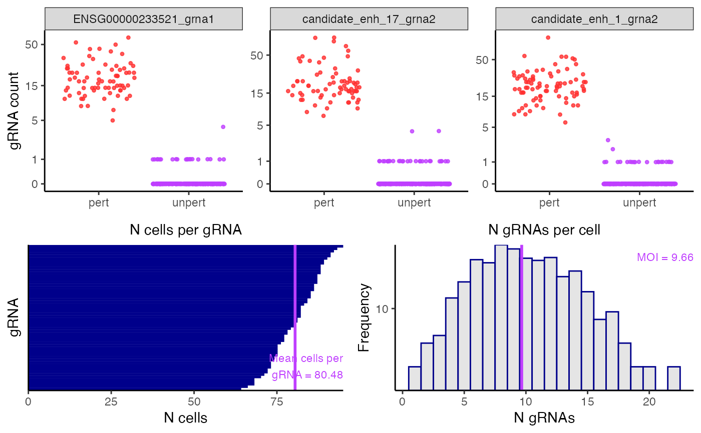

plot_assign_grnas() plots the outcome of the gRNA-to-cell assignment step. The top panel plots the gRNA-to-cell assignments of n_grnas_to_plot (default 3) randomly selected gRNAs. In each plot the points represent cells; the vertical axis indicates the UMI count of the gRNA in a given cell, and the horizontal axis indicates whether the cell has been classified as “perturbed” (i.e., it contains the gRNA) or unperturbed (i.e., it does not contain the gRNA). Perturbed (resp., unperturbed) cells are shown in the left (resp., right) column. The bottom left panel is a barplot of the number of cells to which each gRNA has been mapped. Finally, the bottom right panel is a histogram of the number of gRNAs contained in each cell. The mean number of gRNAs per cell --- i.e., the MOI --- is displayed in purple text.
Usage
plot_assign_grnas(
sceptre_object,
n_grnas_to_plot = 3L,
grnas_to_plot = NULL,
point_size = 0.9,
transparency = 0.8,
return_indiv_plots = FALSE
)Arguments
- sceptre_object
a
sceptre_objectthat has hadassign_grnas()called on it- n_grnas_to_plot
(optional; default
3) the number of gRNAs to display in the plots of gRNA count versus cell assignment- grnas_to_plot
(optional; default
NULL) a character vector giving the names of specific gRNAs to plot; ifNULL, then the gRNAs are chosen at random.- point_size
(optional; default
0.9) the size of the individual points in the plot- transparency
(optional; default
0.8) the transparency of the individual points in the plot- return_indiv_plots
(optional; default
FALSE) ifFALSE, then a list ofggplotobjects is returned; ifTRUEthen a singlecowplotobject is returned.
Value
a single cowplot object containing the combined panels (if return_indiv_plots is set to TRUE) or a list of the individual panels (if return_indiv_plots is set to FALSE)
Examples
library(sceptredata)
data(highmoi_example_data)
data(grna_target_data_frame_highmoi)
import_data(
response_matrix = highmoi_example_data$response_matrix,
grna_matrix = highmoi_example_data$grna_matrix,
grna_target_data_frame = grna_target_data_frame_highmoi,
moi = "high",
extra_covariates = highmoi_example_data$extra_covariates,
response_names = highmoi_example_data$gene_names
) |>
set_analysis_parameters() |>
assign_grnas(method = "thresholding") |>
plot_assign_grnas()
